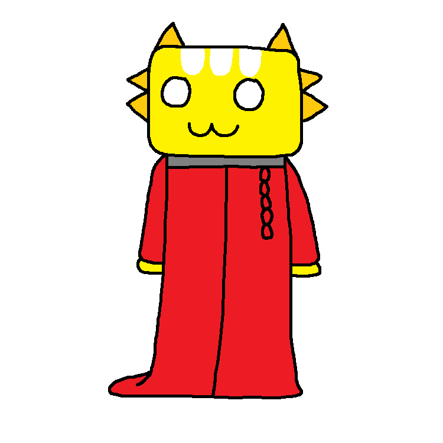

Xin chào / Hello / Привет!
My name is «Ngô Trần Quang Thiện» (Southern accent: /ŋo˧ ʈə̆ŋ˨˩ waŋ˧ tʰiŋ˨˩˨/ Ngoh Truhng Wahng Thing; North accent: /ŋo˧ tɕə̆n˨˩ kwaŋ˧ tʰiə̆n˨˩ˀ/ Ngoh Chuhn Kwong Tee-ehn).
I'm a student who LOVE programming, that's why I'm here, with my random ideas.
Information about me
Some basic one first:
- I live in Ho Chi Minh City, Vietnam.
- I attend to a local school. I'm an excellent student by the way XD.
- I'm kinda bad at art. Take a look! They are based on Cult of the Lamb characters. 
- I also love some weird things. I had rather not saying them.
- I don't like replying unimportant messages, so if you email me and I reply, then you(r email) are special!
Information about my programming
I'm kind of fanatical about programming. My primary programming language is Python and JavaScript. I'm going to learn more languages!
Also, I want to create arts about programming languages.
I've created some Python module. One of them is «countries-dictionary&raguo;. You can download it here. The module is also maintained in one of my GitHub repository, it is here.
My languages
If you see the greetings at the start of the page, those are written in the 3 languages that I understand, they are arranged in order from my first language to the most recent one I have learnt:
- Vietnamese: My native language, of course. I was born in the Southern of Vietnam so I usually use the Southern Vietnamese;
- English: My second one, of course I have to learn it. I feel happy that I'm one of the people in Vietnam that is good at (basic) English. I love using British English, and I have been carefully learning about the differences between American and British English so that I could use British English properly. I still sometimes use American though;
- Russian: I love Russia, so that's why I'm learning their language. (WAITTT! I love Russia doesn't mean I support their war in Ukraine! I still hope that they will make peace)
By the way, shall we translate this romantic sentence into these languages? (Note that in different contexts, the translation would be different)
- Vietnamese: «Tôi yêu em.»
- English: «I love you.»
- Russian: «Я тебя люблю.»
My intentions
I have a lot of intentions, let see...
- Make games! Of course a person who learns progamming would make game;
- Learn more languages;
- Make arts, I've mentioned it earlier;
- etc.
I still have more intentions, but I had rather not saying them, because I don't want people to use my ideas, well...
Anyway...
...This is my first blog, I posted it at midnight.
I will make blogs about about recent events in my life or topics that interest me.
I hope you guys (are going to) have a good day!